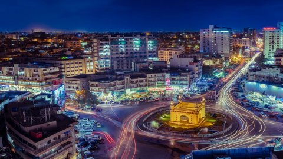
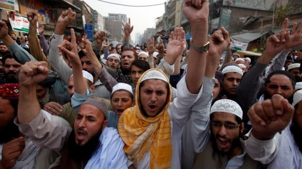
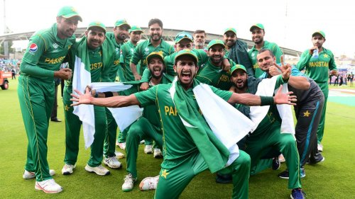
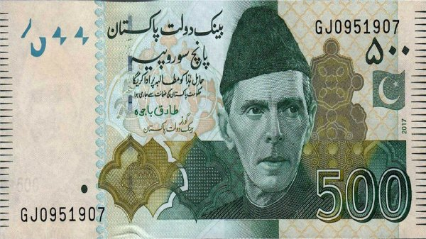

Karachi is one of the world's largest cities, coming number 12 on the list of largest cities in the world. This city has a population of almost 15 million people. Another fact about this city is that I was born here and lived there till I was six years old. Karachi is an amazing city and hosts a lot of attractions and activities for a person to do.
Having a vast population of 200 million-plus people makes a country have different people speaking different languages. Having multiple languages in Pakistan is due to India, but it received its independence in 1947. This resulted in many people migrating to Pakistan and speaking their languages from India or Bangladesh. This resulted in many different people knowing multiple languages as it was necessary for a person to communicate with another person.
The most known and played sport in Pakistan is called Cricket which is a form of baseball, but there are different bats and different rules in some aspects. The sport is enjoyable to play and watch, and I used to play it as a kid when I lived in Pakistan. The sport gets national attention from all over the world, and everyone has to watch the match of their favourite teams as it is very competitive. The national team also won the Cricket World Cup in 1992 and were World Twenty20 champions in 2009.
The rupee is a national currency used by many countries such as India, Bangladesh, Maldives, Sri Lanka and many more. These countries used the currency at one point in time. India was a significant country connected to other South Asian countries, adopting the currency. Over time these countries changed their national currency to rupees allowing it to be used in many parts of South Asia.
